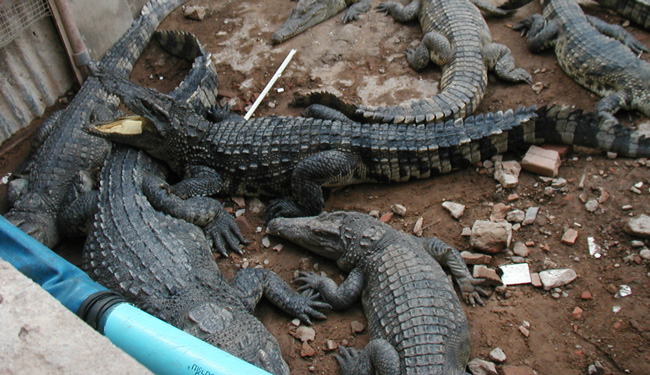
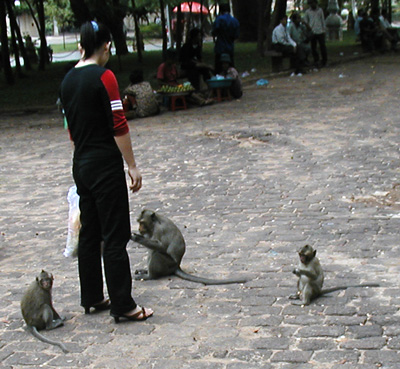
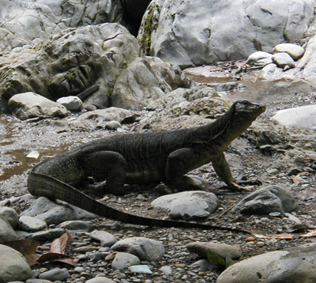

2003 Trav-E-Logs©
| Alliterations |  |
| back: Impressions | 'Cajoled by Caimans in Cambodia' |
================================= Several friends back home got together and made a neat alphabetical list of cautions to be observed while traveling in Southeast Asia. It's certain a lot of fun went into creating the tongue-in-cheek document, so the edited version is repeated here for all to enjoy. =================================
|
Beware not to be: Accosted by apes in Angkor Wat Beset by bears in Borneo Cajoled by caimans in Cambodia Decked by dugongs in Da Nang Eyed by elephants in Indonesia Flipped by flamingos on Flores Goosed by gibbons on Gunung Bromo Hassled by hawks in Hanoi Jinxed by jackals in Java Kissed by kangaroos in Kuala Lumpur Lynched by lizards in Laos Mangled by macaque in Myanmar Needled by naga in Nusa Tenggara Ogled by orangutan in Olayama Pestered by pangolin in Phnom Penh Quizzed by quails in Qui Nhon Rancored by rhinoceros in Rantepao Stupefied by serow in Singapore Tangled by tigers in Thailand Usurped by unicorns in Ubud Vexed by vixens in Vietnam Wallowed by water buffaloes in Wang Kha Yellowed by yaks in Yunnan Zinged by zebras in Zeigyo |
 'Mangled by macaque in Myanmar'  'Lynched by lizards in Laos' |
Enjoy your life -- it's the only one you've got.
Bill
------------------------------
Email me at: "juno.com" preceded by an "@" and "dancer2SEAsia"
"The traveler discovers that people are beautiful. It's the governments that are evil."
| next: Backpack Contents |
| back: Impressions |